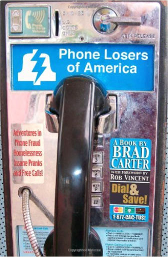
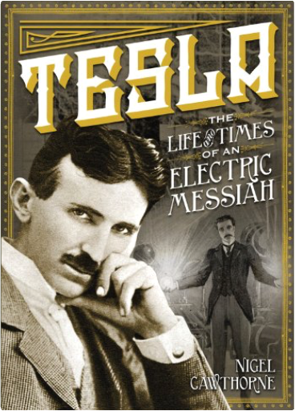
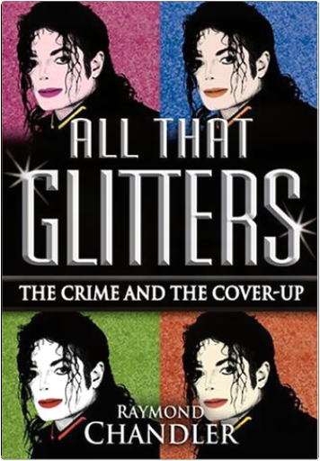
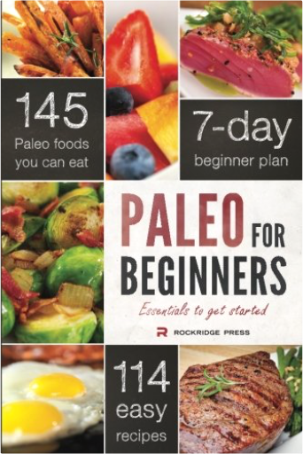

13 Steps to Evil: How to Craft Superbad VillainsSacha Black 13 Steps to Evil: How to Craft Superbad VillainsSacha Black  Your hero is not the most important character in your book. Your villain is.  The Secret Doctrine: The Synthesis of Science, Religion, and PhilosophyHelena Petrovna Blavatsky The Secret Doctrine: The Synthesis of Science, Religion, and PhilosophyHelena Petrovna Blavatsky Continuously in print for over 100 years, the SD remains today the most comprehensive sourcebook of the esoteric tradition, outlining the fundamental tenets of the Secret Doctrine of the Archaic Ages. Challenging, prophetic, and strikingly modern, it directly addresses the perennial questions: continuity of life after death, purpose of existence, good and evil, consciousness and substance, sexuality, karma, evolution, and human and planetary transformation. Based on the ancient Stanzas of Dzyan with corroborating testimony from over 1,200 sources, these volumes unfold the drama of cosmic and human evolution — from the reawakening of the gods after a Night of the Universe to the ultimate reunion of cosmos with its divine source. Supplementary sections discuss relevant scientific issues as well as the mystery language of myths, symbols, and allegories, helping the reader decipher the often abstruse imagery of the world's sacred literature.  She's Not There: A Life in Two GendersJennifer Finney Boylan She's Not There: A Life in Two GendersJennifer Finney Boylan The provocative bestseller She’s Not There is the winning, utterly surprising story of a person changing genders. By turns hilarious and deeply moving, Jennifer Finney Boylan explores the territory that lies between men and women, examines changing friendships, and rejoices in the redeeming power of family. Told in Boylan’s fresh voice, She’s Not There is about a person bearing and finally revealing a complex secret. As James evolves into Jennifer in scenes that are by turns tender, startling, and witty, a marvelously human perspective emerges on issues of love, sex, and the fascinating relationship between our physical and intuitive selves. Now with a new epilogue from the author and an afterword from Deirdre "Grace" Boylan, She’s Not There shines a light on the often confounding process of accepting ourselves.  A Chosen Faith: An Introduction to Unitarian UniversalismJohn Buehrens, Forrest Church A Chosen Faith: An Introduction to Unitarian UniversalismJohn Buehrens, Forrest Church For those contemplating religious choices, Unitarian Universalism offers an appealing alternative to religious denominations that stress theological creeds over individual conviction and belief. In this new edition of the classic introductory text on Unitarian Universalism, which includes a revealing, entertaining foreword by best-selling author Robert Fulghum (All I Really Need to Know I Learned in Kindergarten, It Was on Fire When I Lay Down on It), a new preface by UU moderator Denise Davidoff, and two new chapters by the authors, John Buehrens and Forrest Church explore the many sources of the living tradition of their chosen faith.  Kiss and White Lily for My Dearest Girl, Vol. 1Canno Kiss and White Lily for My Dearest Girl, Vol. 1Canno Two girls, a new school, and the beginning of a beautiful friendship.  Kiss and White Lily for My Dearest Girl, Vol. 2Canno Kiss and White Lily for My Dearest Girl, Vol. 2Canno Ai Uehara and Chiharu Kusakabe's beloved senior Hoshino-senpai is graduating. She wants to study science at a school far away, but that means Ai and Chiharu won't see her anymore. Ai struggles with the reality of senpai leaving, while Chiharu battles with her own unrequited feelings When a bold underclassman interlopes, though, things might take an unexpected turn...  Kiss and White Lily for My Dearest Girl, Vol. 4Canno Kiss and White Lily for My Dearest Girl, Vol. 4Canno (Volume 3) Phone Losers of AmericaBrad Carter Phone Losers of America is a collection of short stories which take you on a twenty year journey of high-tech humor, culture jamming, and criminal mischief. From remotely controlling the overhead paging system of a large supermarket, to confusing the phone company with various call forwarding stunts, this bizarre collection of pranks will not only make you laugh, but will make you question the security and sanity of common, everyday business procedures. Learn how one illustrious member of the PLA crossed the country on stolen credit cards, staying in the nicest hotels one day and then sleeping on the streets of major cities the next, all while amusing himself at the expense of others. Laugh as he turns a radio morning show into his own interactive game, enrages users of an online auction site, uses revenge tactics that cross the line, systematically drives convenience store employees nuts so that he can get a job, and confuses an entire neighborhood of cordless phone users. The stories contained in this book are based on the writings from the Phone Losers of America website which have been featured in USA Today, the Boston Herald, 2600, on CNBC, CNN, TechTV, and countless other websites, books, magazines, radio shows and police reports. Tesla: The Life and Times of an Electric MessiahNigel Cawthorne Despite being incredibly popular during his time, Nikola Tesla today remains largely overlooked among lists of the greatest inventors and scientists of the modern era. Thomas Edison gets all the glory for discovering the light bulb, but it was his one-time assistant and lifelong arch nemesis, Tesla, who made the breakthrough in alternating current technology. Edison and Tesla carried on a bitter feud for years, but it was Tesla's AC generators that illuminated the 1893 World's Fair in Chicago; the first time that an event of such magnitude had ever taken place under artificial light. Today, all homes and electrical appliances run on Tesla's AC current. All That Glitters: The Crime and the Cover-UpRaymond Chandler Book on Michael Jackson All That Glitters: The Crime and the Cover-Up Paleo for Beginners: Essentials to Get StartedJohn Chatham Discover why more people continue to choose Paleo for Beginners—the New York Times bestselling Paleo cookbook that has sold over 150,000 copies sold—more than any other Paleo cookbook. |

 Made with Delicious Library
Made with Delicious Library